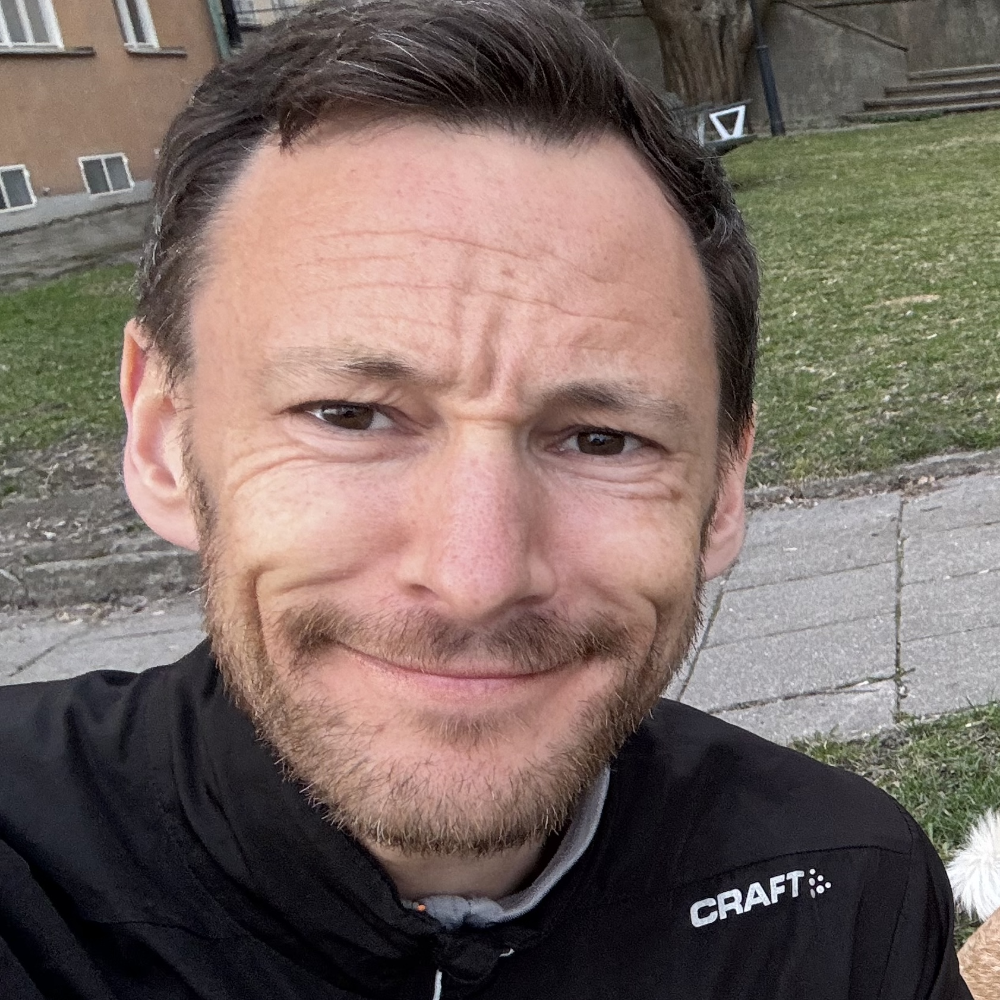

SOM
 TÅGET
TÅGET
Häng med när inspirerande fortbildare från när och fjärran tar dig med på en resa du sent ska glömma.
Du kanske finner dig själv?

Vi ses i "solen"
Mats Ahlberg
Medelålders | Garant | Friskförklarad Mats bor inne men vistas ibland ute. Han har skapat flera dokument och med sina djuplodande insikter kring grejer har han en given plats på Som Tåget-scenen.
Medelålders | Garant | Friskförklarad Mats bor inne men vistas ibland ute. Han har skapat flera dokument och med sina djuplodande insikter kring grejer har han en given plats på Som Tåget-scenen.
Ibland måste Du börja om
Anna Lundgren
Skonsam | Färgseende | Medelålders Anna har en silvermedalj från KM i vanlig bandy. Hon tvekar varken kring att ringa eller svara, och är uppskattad världen över för sina ut- och insikter. Anna har tackat nej till samtliga förfrågningar från Som Tåget genom åren.
Skonsam | Färgseende | Medelålders Anna har en silvermedalj från KM i vanlig bandy. Hon tvekar varken kring att ringa eller svara, och är uppskattad världen över för sina ut- och insikter. Anna har tackat nej till samtliga förfrågningar från Som Tåget genom åren.
Vad kostar bilen?
Adrian Torstensson
Härskarteknik | Medelålders | Berör Adrian har aldrig förstått vilken slipsten som åsyftas och varför den ska dras, men det hindrar honom inte från att delge sin syn på verksamhet. Hans stora passion är livet, och vi är glada att han nu ska dela den med oss på Som Tåget.
Härskarteknik | Medelålders | Berör Adrian har aldrig förstått vilken slipsten som åsyftas och varför den ska dras, men det hindrar honom inte från att delge sin syn på verksamhet. Hans stora passion är livet, och vi är glada att han nu ska dela den med oss på Som Tåget.
Räkna med bråk
Marcus Palmqvist
Medelålders Marcus har körkort och eget boende i Medelpad.
Medelålders Marcus har körkort och eget boende i Medelpad.